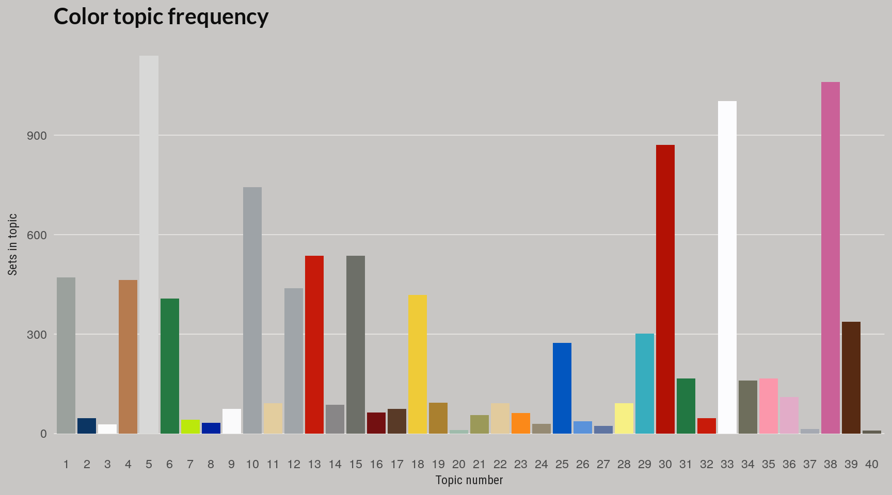
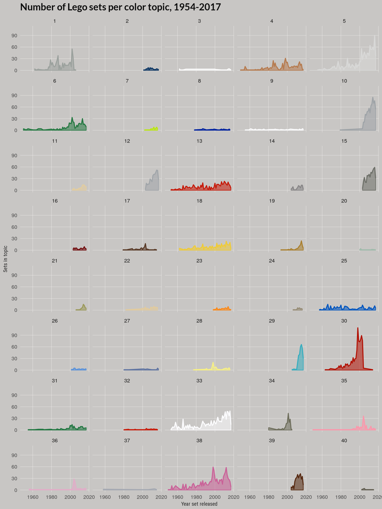

Final Topic model
Nathanael Aff
Final Topic Model
So finally we’ll settle on the topic model with 30 topics and look at a couple of summaries based on that topic.
devtools::load_all()## Loading legoldaknitr::read_chunk(here::here("code", "compare-clusters.R"))# The remaining files rely on this one
# TODO: Move this set of plots elsewhere
library(forcats)
library(purrr)
library(legolda)
if(!exists("set_colors")){
load_data(sample_data = FALSE)
}##
## Attaching package: 'dplyr'## The following objects are masked from 'package:stats':
##
## filter, lag## The following objects are masked from 'package:base':
##
## intersect, setdiff, setequal, union## Connecting to database
## Assigning themes to theme_df
## Assigning sets to sets_df
## Disconnecting from database
## Assigning full set set inventories to 'set_colors'lda_models <- readRDS(here::here("inst", "data", "lda_models_all.RDS"))
model_num = 3
# Get top 2 colors for each topic
lda_models <- lda_models %>%
purrr::map(function(x) {
class(x) <- "LDA"
x
})
# Total frequency used in relevance score
word_freq <- set_colors %>%
count(rgba) %>%
mutate(percent = n / nrow(set_colors))
lambda = 0.5
nterms = 2
top_colors <- top_terms(lda_models[[model_num]], lambda, nterms, word_freq) %>%
mutate(topic_name = forcats::fct_inorder(factor(topic_name)))
# Blend two hex colors
blend <- function(df, scale = 100){
pos <- df$beta[2] * scale
colorRampPalette(c(df$term[1], df$term[2]))(100)[2]
}
# Generate palette that is a blend of the top two
topic_pal <- top_colors %>% split(.$topic) %>%
purrr::map(blend) %>% unlist
vec_2_function(topic_pal)
devtools::load_all()## Loading legoldalibrary(legolda)
library(forcats)
library(dplyr)
library(ggplot2)
model_num = 3
# Assumes topic_pal is available
lda_clust <- readRDS(here::here("inst", "data", "lda_clusters.RDS"))
# Model with 30 clusters
set_clust <- tibble(set_num = names(lda_clust[[model_num]]),
topic_id = lda_clust[[model_num]]) %>%
left_join(sets_df) %>%
arrange(topic_id) %>%
# mutate(topic_name = fct_inorder(factor(paste0("Topic ", topic_id)))) %>%
mutate(topic_id = fct_inorder(factor(topic_id)))## Joining, by = "set_num"topic_pal <- topic_palette()
# Get count per topic
set_clust <- set_clust %>%
count(topic_id) %>%
arrange(n) %>%
mutate(order = row_number())
gg <- set_clust %>% ggplot(aes(x = topic_id, y = n,
fill = topic_id,
group = topic_id))
gg <- gg + geom_col(size = 0.8)
# scale_color_manual(values = topic_pal) +
gg <- gg + scale_fill_manual(values = topic_pal)
# gg <- gg + scale_x_continuous(breaks = set_clust$topic_id )
gg <- gg + labs(x = "Topic number",
y = "Sets in topic",
title = "Color topic frequency")
gg <- gg + theme_bar(bgcol = "#c8c6c4")
# gg <- gg + coord_flip()
gg <- gg + theme(legend.position = "none")
gg <- gg + theme(panel.grid.major.x = element_blank())
gg <- gg + theme(panel.grid.major.y = element_line(color = "#f8f6f4", size = 0.2))
gg
model_num = 3
# Assumes topic_pal is available
lda_clust <- readRDS(here::here("inst", "data", "lda_clusters.RDS"))
# Model with 30 clusters
set_clust <- tibble(set_num = names(lda_clust[[model_num]]),
topic_id = lda_clust[[model_num]]) %>%
left_join(sets_df) %>%
arrange(topic_id) %>%
# mutate(topic_name = fct_inorder(factor(paste0("Topic ", topic_id)))) %>%
mutate(topic_id = fct_inorder(factor(topic_id)))## Joining, by = "set_num"topic_pal <- topic_palette()
# Get count by year and topic
set_clust %>%
group_by(topic_id, year) %>%
count(topic_id) %>%
ggplot(aes(x = year, y = n,
group = topic_id,
color = topic_id)) +
geom_line(aes(color = factor(topic_id)), size = 0.8) +
geom_area(aes(fill = topic_id, alpha = 1)) +
scale_color_manual(values = topic_pal) +
scale_fill_manual(values = topic_pal) +
labs(x = "Year set released",
y = "Sets in topic",
title = "Number of Lego sets per color topic, 1954-2017") +
facet_wrap(~topic_id, nrow = 8) +
theme_scatter(bgcol = "#c8c6c4", grid_col = "#f8f6f4") +
theme(legend.position = "none")
Color distributions by topic
TODO: Paste in later.

final-topics